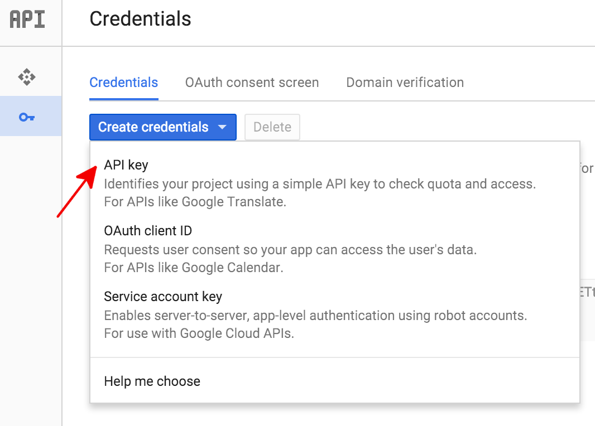
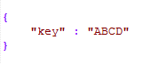

MATLAB function to perform Speech-to-Text using 3rd party Speech API
This example shows to perform speech-to-text transcription in MATLAB. The speech2text function enables you to interface with 3rd party speech APIs.
Contents
Introduction
The speech2text function provides the ability to use 3rd party speech APIs to perform speech-to-text transcription. The function supports the following 3rd party tools:
To use the speech2text function, you must have the following products installed:
- MATLAB release R2017a and above
- Audio System Toolbox
Set up 3rd Party API
Before you start using the speech2text function, you need to perform some steps to set up the API. This involves creating an account with the API and generating an authorization key.
Google, IBM and Microsoft APIs have different requirements to set up an account and generate an authorization key.
Google Speech API
Using the Google Speech API for speech-to-text transcription requires an API key for authorizing the request. The following steps describe how to create the API key. This is also described in the Google documentation:
1. Navigate to the APIs & Services->Credentials panel in Cloud Platform Console
2. Select Create credentials, then select API key from the dropdown menu

3. Click the Create button. A dialog box appears which displays your newly created key
4. Once you have the API key, download it and create a JSON file such that:
a. JSON file should have only one attribute: “key” (case sensitive). For example, if the API key generated is ABCD, then the file will have the attribute “key”, and value “ABCD”, as shown below:

b. Save the file as "Google_Credentials_Speech2text.json" to a secure location
The speech2text function will look for “Google_Credentials_Speech2text.json” to obtain the API key, which the Google Speech API requires for authentication.
IBM Watson Speech API
The IBM Speech API is offered through Watson services, and to access it the user should have an IBM Bluemix account. When the user sets up their service account, they are provided with a username and password.
The following steps describe how to set up an account and obtain the username and password. This information is also described in the IBM-Watson documentation:
1. Go to the Speech to Text service and sign up for a free Bluemix account or log in to your existing account.
2. After you log in, enter speech-to-text-tutorial in the Service name field of the Speech to Text page. Click Create.
3. Copy the credentials created:
a. Click Service credentials
b. Click View credentials under Actions
c. Copy the username, password and url values
4. Write the username, password and url values to a JSON file:
a. JSON file should have at least two attributes: “username” and “password” (case sensitive) For example, if the username generated is ABCD and password is XYZ then the file will have the attribute “username” with value “ABCD” and "password" with value "XYZ", as shown below:

b. Save the file as "IBM_Credentials_Speech2text.json" to a secure location
The speech2text function will look for “IBM_Credentials_Speech2text.json” to obtain the username and password.
Microsoft Azure Speech API
The Azure Speech API is part of Cognitive Services, and requires subscription keys. You can obtain the keys from the Cognitive Services subscription page by following the steps below:
1. Go to the Cognitive Services subscription, and login/create your Microsoft Azure account.
2. Select Bing Speech API under Speech and click on Get API Key.
3. This returns a primary and secondary key – “Key 1” and “Key 2”. Write these to a JSON file:
a. JSON file should have only two attributes: “Key1” and “Key2” (case sensitive) For example, if the Key 1 generated is 1234 and Key 2 is 5678 then the file will have the attribute “Key1” with value “1234” and "Key2" with value "5678", as shown below:

b. Save the file as "Microsoft_Credentials_Speech2text.json" to a secure location
The speech2text function will look for “Microsoft_Credentials_Speech2text.json” to obtain the subscription key.
If the JSON file is not on MATLAB search path, the speech2text function will prompt you to provide the path. This path is then saved to MATLAB search path.
Defining speechClient
After getting the authorization credentials from the respective API, you are ready to perform speech to text transcription. The first step is to set up a speechClient object with the speech API and its properties.
This example uses the Google Speech API, and specifies the Language Code property:
speechObject = speechClient('Google','languageCode','en-US');
Input Parameters
Since each of the APIs support varied number of input parameters and the parameters have different names, you are expected to provide the correct input for the API. If the API returns any error due to incorrect input parameters, then the speech2text function captures and reports the error.
Using Google
The name-value pairs provided with the speechClient object should adhere to the name-value pair that the Google API accepts, as described in their documentation.
Using IBM
For the IBM API, the name-value pairs provided to the speechClient object should adhere to the name-value pair that the IBM API accepts, as described in their documentation. For example, to specify the keywords to IBM, you also need to specify the threshold value:
speechObject = speechClient('IBM','keywords',"example,keywords",'keywords_threshold',0.5);
Using Microsoft
For Microsoft Speech API the name-value pairs provided with the speechClient object should adhere to the name-value pair as described in their documentation.
If there are no property name and values specified, then the API uses default values. Refer to the respective API’s documentation for more information on default values.
Perform Speech-to-Text Transcription
Read a speech signal, and get the speech samples (y) and sampling frequency (fs). This example uses a speech signal which counts numbers from 1 to 10 in English.
[y,fs] = audioread('Counting-16-44p1-mono-15secs.wav');
Call the speech2text function and pass the speechClient object with y and fs
tableOut = speech2text(speechObject,y,fs)
tableOut =
5×2 table
TRANSCRIPT CONFIDENCE
_______________________________ __________
"1" 0.79171
" 2" 0.77389
" 3" 0.7973
" 4" 0.73331
" five six seven eight nine 10" 0.89761
Call the speech2text function and pass the speechClient object with y, fs, and HTTPTimeOut
tableOut = speech2text(speechObject,y,fs , 'HTTPTimeOut', 25)
tableOut =
5×2 table
TRANSCRIPT CONFIDENCE
_______________________________ __________
"1" 0.79171
" 2" 0.77389
" 3" 0.7973
" 4" 0.73333
" five six seven eight nine 10" 0.89761
Output Format
The output is returned as a table with Transcript and Confidence values. If there were any errors, then the output provides the error code and the error message. If you configured the speechClient to return additional results, then the output of speech2text returns the additional results as part of the output table. For example, if you had set the maximum alternatives property to 3 and if there are 3 alternatives returned by the Google API then the output will have three columns: TRANSCRIPT, CONFIDENCE and ALTERNATIVES. The ALTERNATIVES will be another table that contains the TRANSCRIPT and CONFIDENCE of the alternate transcription of the speech signal
speechObject = speechClient('Google','languageCode','en-US','maxAlternatives',3); tableOut = speech2text(speechObject,y,fs)
tableOut =
5×3 table
TRANSCRIPT CONFIDENCE ALTERNATIVES
_______________________________ __________ ____________
"1" 0.79171 [1×2 table]
" 2" 0.77389 [1×2 table]
" 3" 0.79729 [1×2 table]
" 4" 0.73331 [1×2 table]
" five six seven eight nine 10" 0.89761 [1×2 table]
Billing Details
MathWorks provides the speech2text function free of charge. However, the 3rd party speech APIs are not free. Consult the individual API documentation for pricing details: